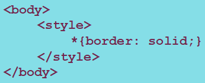

Estructura vs. Formato
Es posible dar formato, es decir, aplicar un estilo dentro del propio documento HTML. Existen dos formas de hacerlo:
Atributo "style"
‹body style="border:solid"›
Etiqueta "style"
¿HTML style o CSS?
Aunque exista la posibilidad, no es recomendable aplicar formato a un documento HTML de esta manera. Esto es debido a que el estilo que apliquemos solo afecta al elemento o documento sobre el que se indique (no es posible externder ese estilo a otros elementos). Además, resulta más complicado realizar el mantenimiento o modificar el HTML en un futuro.
La solución para por utilizr hojas de estilo (CSS). En este caso el estilo se define en un fichero independiente y el documento se puede enlazar al estilo que mejor se adapte al sitio.
Para enlazar un documento CSS a un documento HTML tendremos que indicarlo en el elemento ‹head› con un link.
‹link type="text/css" rel="stylesheet" href="estilo.css"›
En este caso href es una URI de la hoja de estilos, que debe estar dentro del mismo directorio de HTML.